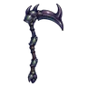
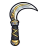
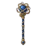
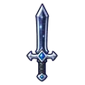
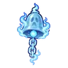
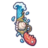
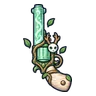
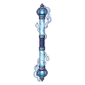
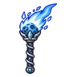

ผู้จุดตะเกียงรุ่นแรก · ร่างทอง
มอนธาตุวิญญาณ Lv 99–99
เจอที่
| แมพ | โซน | Lv | ภูมิภาค |
|---|---|---|---|
| หลุมดาว ชั้น 2 · ใจกลางดาว | 99–99 | ที่ราบสูง |
ค่าสถานะตามเลเวล
| Lv | HP | ATK | DEF | MDEF | EXP | Job |
|---|---|---|---|---|---|---|
| 99 | 176,963 | 403–605 | 43 | 45 | 424 | 318 |
ตีด้วยธาตุไหนดี
แรงขึ้น: วิญญาณ ×1.25
เบาลง: ไม่มีธาตุ ×0.25
วัตถุดิบที่ดรอป
| ของ | โอกาส | |
|---|---|---|
| ถ่านไฟดาว | 90% | 1 ชิ้น (15% ได้ 2) |
อุปกรณ์ที่ดรอป (9)
| ของ | โอกาส |
|---|---|
 เคียวใหญ่เขาด้วงแรด | 0.25% |
 เคียวคู่ชิ้นเอก | 0.25% |
 คทาวงโคจรทองคำ | 0.25% |
 ดาบเหล็กดวงดาว | 0.25% |
 กระดิ่งวิญญาณภูตมายา | 0.06% |
 ปืนพกคู่คลื่นยักษ์ | 0.06% |
 ปืนพกคู่ภูตพงไพร | 0.06% |
 ไม้พลองแก้ววิญญาณ | 0.06% |
 คบเพลิงดาวหาง | 0.06% |
สกิล
วาร์ป (Lv 25+) · วาร์ป (Lv 60+) · ม่านเวท (Lv 60+)